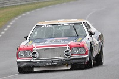

GRAN  TORINO
TORINO

The Ford Gran Torino is an automobile that was produced in the late 1960's and 1970's as a competitor in the intermediate market segment. It was named after the Turin--translating to "Torino" in Italian, also dubbed "The Italian Detroit." This old-school muscle car was one of the most mainstream sports and muscle cars on the market with an entire movie named off the model starring Clint Eastwood simply named "Gran Torino".
Throughout its history it did become a huge, mainstream car, but it also was good with racing at the time. In the form of the Gran Torino Talladega--named after the speedway in 1969 in Lincoln, Alabama--the Talladega has also achieved quite some huge records with Racer Buddy Baker being the very first racer to break te 200mph mark while driving the Talladega along with Rusty Wallace circling the 2.66 mile trioval in only 44.2 seconds in June 9th 2004.

The Gran Torino's legacy is still living today with hundreds maybe even thousands of models still in conditions ranging from professionally refurbished to mint condition. The line of Gran Torinos has alo been a major hit in the pop culture industry with "Gran Torino" a movie Written and Directed by and Starring Clint Eastwood(as previously mentioned), and "Talladega Nights" a comedy starring Will Ferrel and John C. Reily.